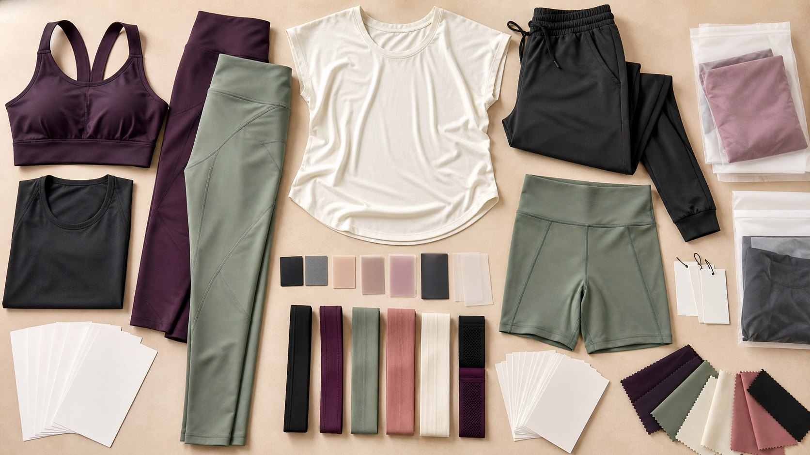

Define the wearer
Record target customer, body-data source, fit model, base size, intended compression, coverage, and silhouette.

Fit development guide
Turn one approved base fit into a controlled size range by defining product-specific measurements, grade rules, tolerances, fit intent, and representative size-set checks.
Direct answer
Approve the base-size pattern and fit first, then grade each point of measurement according to the garment, fabric behavior, body coverage, and intended silhouette. Review calculated measurements, pattern shapes, and representative size-set samples together; a single percentage applied to every dimension does not create a reliable size range.
Record target customer, body-data source, fit model, base size, intended compression, coverage, and silhouette.
Name every point of measurement, method, base value, grade increment, tolerance, and relationship to nearby seams.
Check that curves, rises, armholes, necklines, gussets, straps, and panels remain functional across the range.
Measure and fit selected sizes from the intended range, especially where body proportions or construction behavior change.
Three controls
These controls answer different questions. Combining them in one number makes sample comments and bulk inspection difficult to interpret.
| Control | Question answered | Required evidence |
|---|---|---|
| Base-size specification | What should the approved reference size measure and how should it fit? | Measurement chart, point-of-measure diagrams, approved pattern or sample, fit comments, and fabric reference. |
| Grade rule | How should each measurement and pattern area change between sizes? | Per-size or incremental values linked to named measurements and the intended size range. |
| Tolerance | How much production variation is acceptable around each specified measurement? | Measurement-specific limits that reflect construction, fabric, inspection method, and product risk. |
| Fit intent | Should the garment be compressive, close, relaxed, cropped, high rise, or offer a defined coverage level? | Written fit language, wearer profile, reference images, activity use, and approved fit evaluation. |
Development workflow
Use a controlled sequence so the size chart, pattern, sample, and inspection method continue to describe the same product.
State the complete intended size range, fit-model profile, customer market, body-data source, and which size will establish the first approved fit.
Confirm fabric composition, weight, stretch direction, recovery, opacity, power, lining, elastic, and wash condition before finalizing grade decisions.
Give each measurement a unique name, diagram, method, base value, grade rule, tolerance, and note about stretched or relaxed measurement.
Check that seam lengths, panel joins, gussets, waistbands, armholes, necklines, straps, cups, and elastics change together without distorting shape.
Review every finished value across the range. Flag abrupt changes, copied increments, missing measurements, and values that conflict with the pattern.
Select sizes that can reveal range behavior, construction risk, and proportion changes. Record actual measurements and wearer feedback against the same specification.
Update the measurement chart, grade rules, diagrams, pattern revision, sample comments, and approval status together before bulk production.
Product-specific grading
The same size label does not make leggings, sports bras, tops, and shorts grade in the same way. Prioritize the measurements that change support, coverage, movement, or garment balance.
| Product area | Measurements to define | Risk to review |
|---|---|---|
| Leggings and shorts | Waist, high hip, hip, rise, inseam, thigh, leg opening, waistband height, gusset, and pocket position. | Waist roll, front or back rise balance, opacity, seam strain, leg restriction, gaping, and pocket access. |
| Sports bras | Underband, body length, neckline, armhole, strap length and position, cup or pad pocket, and bottom elastic. | Support, underband pressure, neckline coverage, side coverage, strap slip, cup position, and elastic recovery. |
| Fitted tops | Bust, waist, hem, body length, shoulder, neckline, armhole, sleeve width, sleeve length, and cuff. | Riding up, neckline distortion, underarm restriction, sleeve twist, hem flare, and print or logo placement drift. |
| Relaxed layers | Chest, hem, shoulder, body length, sleeve, hood or collar, pocket, and opening dimensions. | Unintended oversizing, lost garment balance, pocket position, sleeve proportion, and trim scale across sizes. |
| Coordinated sets | Independent top and bottom measurements plus the size labels, colorways, SKU mapping, and packing combinations. | Assuming every customer needs the same top and bottom size or losing set identity during packing. |
Inclusive ranges
When body proportions, support needs, or construction behavior change materially, review whether one base block and continuous grade remain suitable. The decision should come from body data, fit evaluation, and product function rather than a label alone.
Size-set approval
A size set is useful only when the buyer knows the sample identity, actual measurements, wearer profile, fit result, material, and remaining open decisions.
Record style, colorway, size, pattern revision, sample stage, material lot or reference, and date.
Compare actual values with specifications using the documented point-of-measure method and condition.
Record wearer profile, intended activity, coverage, pressure, mobility, garment balance, and visible distortion.
State which sizes, materials, colorways, artworks, and packing details are approved and what still requires evidence.
Continue planning
FAQ
No. Width, length, rise, opening, strap, elastic, cup, panel, and placement measurements serve different functions. Define each rule according to garment geometry, material behavior, body coverage, and fit intent.
No. The finished measurement chart should agree with the graded patterns, point-of-measure methods, approved material, and representative size-set samples. Calculated values alone cannot prove garment shape or wearer fit.
The review plan depends on range width, product complexity, material risk, construction, and available wearer evidence. Define representative sizes and escalation points instead of assuming one universal sample plan.
Consider it when continuous grading no longer preserves intended proportions, support, coverage, mobility, or construction behavior. Use body data, pattern review, and representative fitting to make the decision.